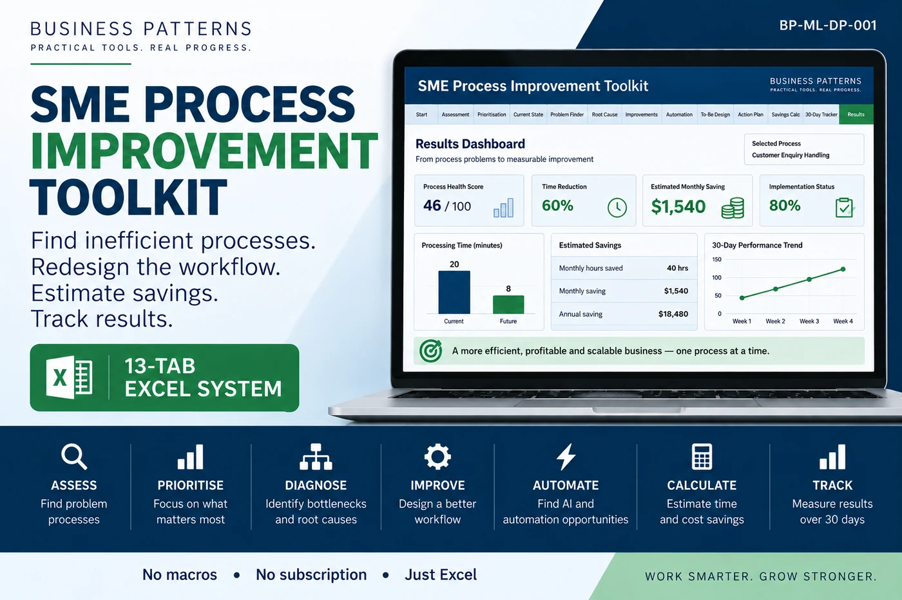
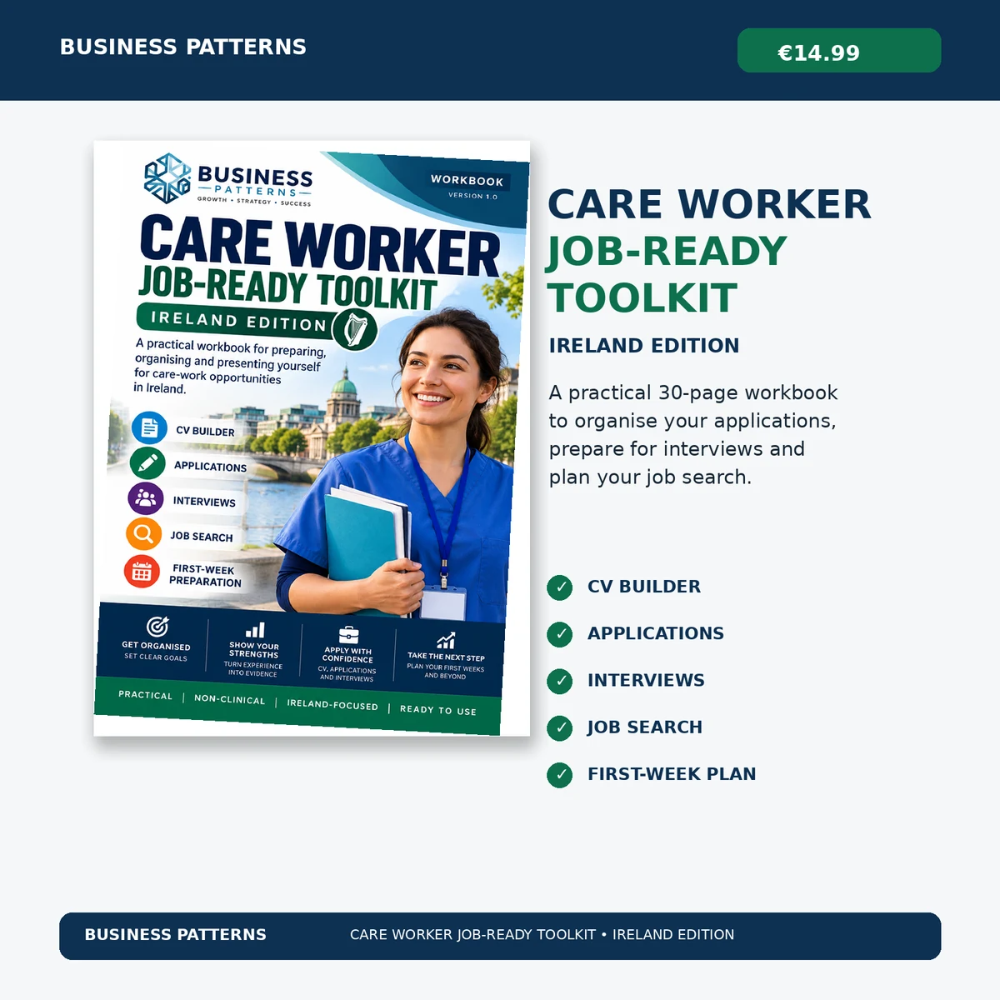

Better Processes. Practical Technology. Smarter Ways of Working.
BUSINESS PATTERNS helps small and growing organisations understand how work gets done, improve inefficient processes and use practical digital technology and automation where they make sense.
How we help
Start with the business problem, then use the simplest appropriate solution.
Process Improvement
Map current work, identify bottlenecks, delays and repeated effort, then design clearer processes.
Digital Technology
Use practical digital tools and systems to improve coordination, visibility and everyday operations.
AI & Automation
Identify appropriate opportunities to reduce repetitive work and improve responsiveness while keeping people in control.
Digital Front Office
A practical digital operating layer for businesses and organisations that need a stronger online presence, better enquiry handling and more organised follow-up.
See the capabilityBuilt around real workflows
Website and digital presence, enquiry capture, customer workflows, CRM organisation, WhatsApp integration and selected automation can be combined according to the actual need.
Digital products

SME Process Improvement Toolkit
A 13-tab Excel system to assess processes, diagnose problems, design improvements, estimate savings and track results.

Care Worker Job-Ready Toolkit: Ireland Edition
A practical 30-page workbook to organise applications, prepare for interviews and plan a care-sector job search.
How we work
Have a business process or digital operations problem?
Tell us what is happening today and what you are trying to improve.
Contact BUSINESS PATTERNS